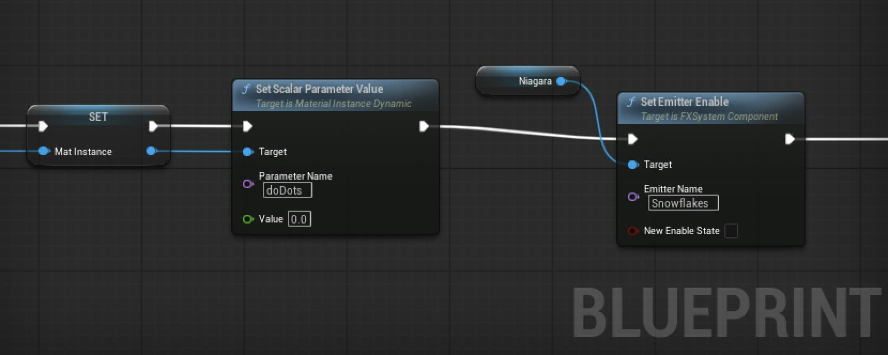

Sarah Hatch, 2026, Unreal 5.6.2
These are two very similar Blueprint objects. When the player walks into the circle they activate and the weather changes (Snowfall or Rainfall). In addition the activation shows extra effects while the player remains within the circle. This involves a couple different connections.
The simpler of the objects is the rain circle.

In its default state the Niagara emitter spawns slow blue ripples across the surface. The spawn rate and color of the ripples are controlled by user parameters. When entering the circle, both are updated. The spawn rate is increased, and the color is changed to a lighter blue. Upon exiting the circle, the values are returned to normal.
On entering the circle the blueprint determines whether the entering object is a player, if so it calls a function on the player to start the rain. The player then activates its own Niagara particle system that adds rain particles. As the rain is linked under the player, it moves when they do.
Side Note: there are two options here. By default the already existing particles will remain where they are but the emitter will move. In the case if the rain this is what we want. However there is also an option to move all particles in the local space of the parent.

The snowflake emmitter works much the same. It has a collision shape that detects the player, and on detection, updates the niagara emitter and tells the player to start a Niagara effect of its own, snow in this case. There are however a couple differences.
First, the circle image itself is part of the Niagara emitter. It is a simple persistent sprite that slowly rotates. I could have done this rotation to the plane in the previous example but I would have had to change collision settings to prevent the plane from rotating the player. That would have been a perfectly valid option as well. This is a sprite that is locked to a specific axis, not towards the camera. The reason I implemented it as a sprite was to test how Niagara handled dynamic materials. It turns out that on changes to the dynamic materials the user parameter does need to be updated. In this case I used the dynamic material to toggle on and off the glowing dots in the material.
The second difference is that instead of changing a user variable to update my niagara system. I am toggling an emitter.

The third difference is an overlay effect on the player. Just like the function call to add rain or snow, this object tells the player on entering to update its overlay material. I made a simple material to look like frost. It has a Fresnel effect of light blue and more dense light blue noise on the legs of the character.(where the character is surrounded by snowflakes) This is done via a mask determined by local height.


As touched on is the general description of materials; transparent materials are somewhat expensive. Especially when there are lots of them in the scene. The floating snowflake particles are the same design as the snowflake insignia on the floor, however that is a transparent material having so many of those is expensive, in this case needlessly so because the details are so small they are not relevant. So instead, these are a separate material that is masked instead of transparent. It looks relatively equivalent and is less expensive.
For the snowfall around the player I ran into a similar situation. The snowfall did not look right when made masked. It looked hard and stylized, which in this case wasn’t what I wanted. So I ended up making two emitters. One that was close to the character and produced transparent particles. And another that had a much wider area and produced masked particles. This way I was able to get the nearby particles to mostly be transparent, and the far away particles you weren’t looking at closely anyway to be more performant.
CodeLikeMe, Unreal Engine 5 Snow Particle Tutorial, Aug 7, 2022, https://www.youtube.com/watch?v=sUW3or-YCrk
CGHOW, Create a Healing Spell in UE5.5: Ultimate Niagara VFX Tutorial, Nov 12, 2024, https://www.youtube.com/watch?v=dhgRINBVOZw
Coreb Games, UE5 | How To Create Magic Circle Niagara Effect | VFX Tutorial | Unreal Engine 5, Jan 23, 2024, https://www.youtube.com/watch?v=KEPaj9k9n7Q